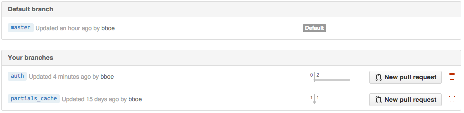

CS290B
Bryce Boe
October 23, 2014
https://github.com/scalableinternetservices/labslides/blob/master/devise.md
See: https://github.com/plataformatec/devise
Create branch to add authentication (Start Story Procedure)
1 2 | # Ensure on master and up-to-date (git checkout master, git pull)
git checkout -b auth
|
Add to: Gemfile
1 | gem 'devise'
|
Execute:
1 2 3 4 5 6 7 8 9 10 | bundle install
rails generate devise:install
# View/Edit config/initializers/devise.rb
rails g devise user # recall that 'g' is short for generate
# Run the migration
rake db:migrate
# Commit this code
git add .
git commit -m "[#PTID] Generated devise scaffold user class."
git push -u origin auth
|
Update: test/fixtures/users.yml
1 2 3 4 5 | one:
email: one@test.com
two:
email: two@test.com
|
Execute:
1 2 3 4 5 6 | RAILS_ENV=test rake db:migrate
rake test
# View Routes
rake routes
# Start server
rails s
|
URLS:
Edit: app/views/layouts/application.html.erb (add to end of body tag, for now)
1 2 3 4 5 6 7 | <% if user_signed_in? %>
<%= link_to 'Log Out', destroy_user_session_path,
method: :delete, data: { confirm: 'Are you sure?' } %>
<% else %>
<%= link_to 'Log In', new_user_session_path %> |
<%= link_to 'Sign Up', new_user_registration_path %>
<% end %>
|
Verify functionality
Execute:
1 | rake test
|
Observe errors:
ActionView::Template::Error: undefined method `authenticate' for nil:NilClass
Edit: test/test_helper.rb
1 2 3 | class ActionController::TestCase
include Devise::TestHelpers
end
|
Execute:
1 | rake test
|
Execute (First part of Finish Story Procedure):
1 2 3 4 5 | git status
git diff
git add .
git commit -m "[Fix #PTID] Add basic authentication functionality."
git push # This should _Finish_ the story in PivotalTracker
|
Create a pull request from your repo's branch list (the Deliver on PT):
https://github.com/scalableinternetservices/labapp/branches

(Final part of Finish Story Procedure)
Goal: Unauthenticated users are redirected to the login page when attempting to create or edit a comment.
Follow the Start Story Procedure
Add to CommentsController: app/controllers/comments_controller.rb
1 | before_action :authenticate_user!, only: [:create, :edit, :new, :update]
|
Add the following line to tests for create, edit, new, and _update:
1 | sign_in users(:one)
|
Add a user relationship for each fixture in test/fixtures/comments.yml:
1 2 | ...
user: one
|
Follow the Finish Story Procedure
Goal: Displayed comments should output the name of the user who created the comment.
Follow the Start Story Procedure
Create and run the migration:
1 2 3 | rails g migration AddUserToComments user:references
# Inspect the migration code, then apply
rake db:migrate
|
Associate comments with a user and enforce that new/updated comments have a user (edit: app/models/comment.rb)
1 2 | belongs_to :user
validates :user, presence: true
|
Edit app/controllers/comments_controller.rb:
1 2 3 4 5 | before_action :authenticate_user!, only: [:create, :edit, :new, :update]
...
def create
@comment = Comment.new(comment_params)
@comment.user = current_user
|
Update: app/views/comments_comment.html.erb
1 | <div>(<%= comment.user.email if comment.user %>) <%= comment.message %></div>
|
Follow the Finish Story Procedure
| Table of Contents | t |
|---|---|
| Exposé | ESC |
| Full screen slides | e |
| Presenter View | p |
| Source Files | s |
| Slide Numbers | n |
| Toggle screen blanking | b |
| Show/hide slide context | c |
| Notes | 2 |
| Help | h |